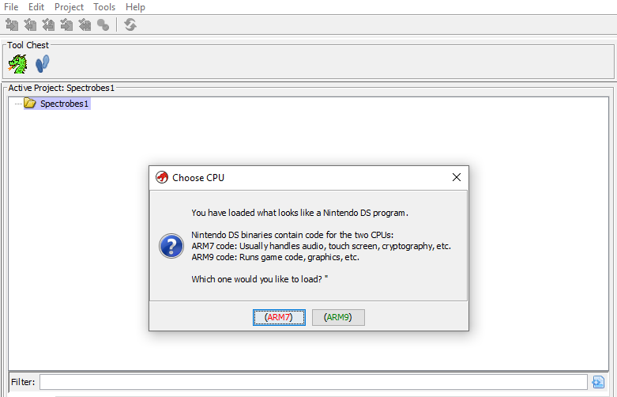
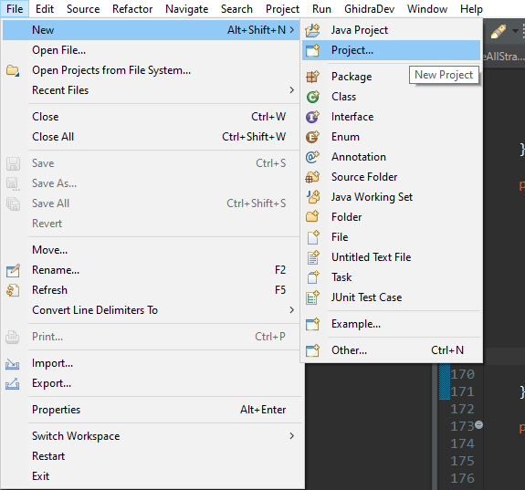
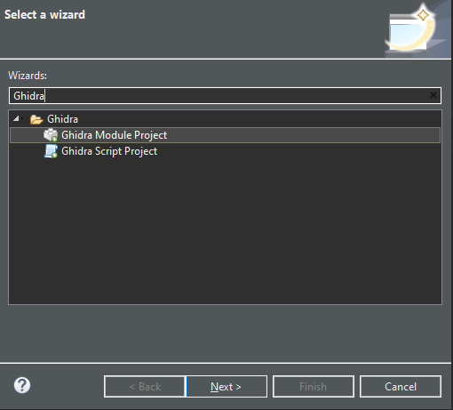
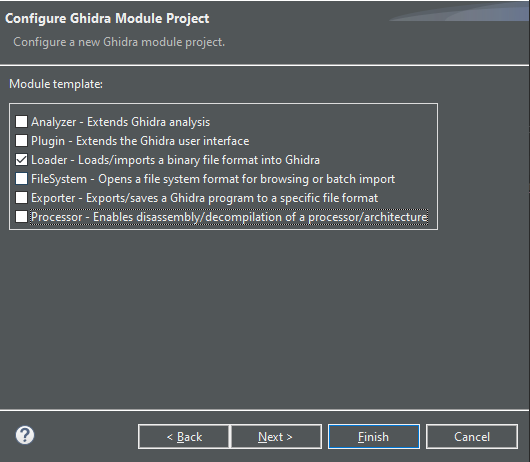
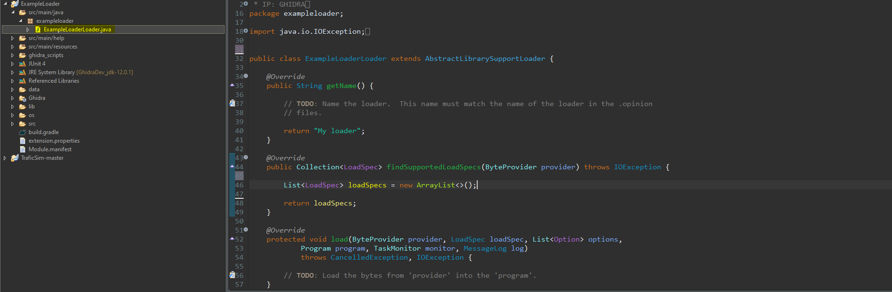
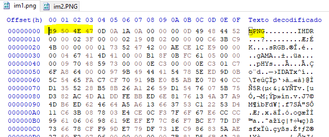

Tutorial: Writing a Ghidra loader
Introduction
All aboard the reversing train! It’s april 2020 and the whole world has slowed down due to COVID-19. I figured this is a good oportunity to keep learning. Since I’m trying to move on from paid software reverse-engineering ,I started to embrace free and open-sourced alternatives.This would be decent to learn about Ghidra internals. Specially I wanted to write a loader for an unsupported format.

What is a loader?
A loader, for most reversing tools, is an extension to their code that allows the initial parsing and understanding of a specific file format. Ghidra’s codebase is writen in Java and so will be our project.
What is not a loader?
A loader is only in charge of understanding the structure of the file, slicing it, and feeding it to Ghidra. Therefore, a loader does not add support for new architectures, processors or languages. It will nonetheless instruct Ghidra about which existing architecture dissasembler to use, for example.
Development Environment
Having Ghidra installed is the first requirement. We use Eclipse as the prefered IDE/Environment as it is supported oficially by Ghidra. Download the last version here and install it.
Secondly, the Eclipse extension for Ghidra development has to be installed. To do so, open Eclipse and click Help, then Install New Software, find the Add button and select the file GhidraDev.zip which should be found at /Extensions/Eclipse/GhidraDev/ directory on your Ghidra installation folder. Restart Eclipse and we are done to create a new project.
Project Set-Up
The GhidraDev extension provides us with templates for all kinds of Ghidra extensions. Loaders, analyzers, etc.

Create a new project and select “Ghidra Module Project”.

We will eventually be asked about the name for our project. After that, we can choose what type of extension we are going to work with, we can choose more than one, and templates will be created for our selections. Let’s select Loader.

Click next and finally we will have to specify the path where our Ghidra installation is, if we haven’t already.
Project Structure

Eclipse has created a .java file with the name of our loader (ExampleLoaderLoader.java in this case) with some basic methods we have to fill. Let’s see what they are suppossed to do.
public String getName(): Returns the name of our Loader. Just replace the string with the name of the file-type you are working with, and (this is a suggestion of mine) the usual extension for that kind of binary, if any.
public Collection<LoadSpec> findSupportedLoadSpecs(ByteProvider provider): This method will check if the file the user has provided can be loaded by our loader.
protected void load(ByteProvider provider, LoadSpec loadSpec, List<Option> options, Program program, TaskMonitor monitor, MessageLog log): If the file was indeed valid, this method will work with it, read it, split it, and set-up the Ghidra database with its information.
The remaining methods won’t be used.
Real life example
I have shown how to make a generic Ghidra project, but further instructions depens on what file format you are trying to add support for. In my case, I am developing NTRGhidra, a Loader for Nintendo DS (NTR) files. The full code can be found at github
After reading public Ghidra loaders, I came to the conclusion that there are several ways to approach the coding of a Ghidra loade. Here’s mine.
1. findSupportedLoadSpecs
In this method we have to check wether the file correspond to the type our loader is able to parse. This is usually achieved by finding magic number (constant values) in the file that confirm its type. A generic example would be PNG files.

The highlighted bytes at the beggining of the file should always exist in these kind of files. When it comes to a custom format, we have to find a constant value or signature to identify the file. Checking at the Nintendo DS header I quickly noticed the following entry:
Addr Size Description
15Ch 2 Nintendo Logo Checksum, CRC-16 of [0C0h-15Bh], fixed CF56h
The value 0xCF56 (2 bytes) should always be placed at offset 0x15C in the file, as it is a checksum of the Nintendo logo, which never changes. Let’s see then how to implement this.
@Override
public Collection<LoadSpec> findSupportedLoadSpecs(ByteProvider provider) throws IOException {
// In this callback loader should decide whether it able to process the file and return instance of the class LoadSpec, telling user how file can be processed*/
//Create a binary reader
BinaryReader reader = new BinaryReader(provider, true);
boolean targetCPU;
//Read the magic number from the file
if ((reader.readInt(0x15C) & 0x0000FFFF) == (0xCF56))
{
//Nintendo DS has two CPUs. Ask the user which code he/she wants to work with, the ARM7 one or the ARM9 one.
targetCPU = promptToAskCPU();
//Setup Ghidra with the chosen CPU.
if(targetCPU)
return List.of(new LoadSpec(this, 0, new LanguageCompilerSpecPair("ARM32:v4t", "default"), true));
else
return List.of(new LoadSpec(this, 0, new LanguageCompilerSpecPair("ARM32:v5t", "default"), true));
}
return new ArrayList<>();
}As you can see, I’m trying to detect if the magic number is in place. If the signature isn’t found, an empty LoadSpec ArrayList is returned (which means our loader doesn’t recognize the format). Alternatively, if the file is valid, the loader asks the users which part of the binary they want to analyze. This is because Nintendo DS binaries contain 2 different binaries from different ARM architectures, an ARM7TDMI binary, which uses the ARMv4t architecture version, and an ARM9 which uses the armv5t architecture version.
How do you find the exact “codename” that Ghidra uses for the architecture of your desire? You look at the Ghidra/Processors/ARM/data/languages/ARM.opinion file for the architectures that Ghidra supports.
What does each part of the “ARM:LE:32:v4t” string represent? ARM specifies that the CPU is an ARM. LE indicates Little Endian. 32 means a x32 bits processor. And v4t is about the architecture version of the ARM.
promptToAskCPU is just a method that asks the user with a dialog to choose which binary they want to load, you can find it in the full code at github. If your file only has one binary you can just return new LoadSpec(...) with the architecture of your binary, without asking the user.
2. load()
The load method is the big deal of any loader, it knows (or knows what knows) how to understand the file format. There are several methodologies to implement a method like this one.
One of them is to create a separate class of the form {formatName}Header which can parse the header of the file (if it exists) and return the address of the segments or sections of the file. Alternatively, if the segments are not many or are not even dynamically allocated (more or less like in this case) you may as well just code everything needed and put it inside the load() method.
I want to explain some theory that was useful for me to understand before beginning. Ghidra has two APIs that can be used for extension programimg: the “full” API which supports almost everything that can be done with Ghidra. Methods and types may change from version to version. And then there’s the flat API, which doesn’t change in theory, but has limited capabilities. I use both for NTRGhidra.
@Override
protected void load(ByteProvider provider, LoadSpec loadSpec, List<Option> options,Program program, TaskMonitor monitor, MessageLog log) throws CancelledException, IOException{
BinaryReader reader = new BinaryReader(provider, true);
FlatProgramAPI api = new FlatProgramAPI(program, monitor);
Memory mem = program.getMemory();
...First things first, the provider argument passed is an object to read bytes from our file. Let’s wrap it into a BinaryReader. Next, create a FlatAPI object, and finally a reference to the current project’s memory database. Done that, we can proceed to create the memory segments and populate them:
if(!chosenCPU) //ARM9
{
monitor.setMessage("Loading Nintendo DS ARM9 binary...");
//Read the important values from the header. Can be implemented in a separate class.
int arm9_file_offset = reader.readInt(0x020);
int arm9_entrypoint = reader.readInt(0x024);
int arm9_ram_base = reader.readInt(0x028);
int arm9_size = reader.readInt(0x02C);
// Main RAM block: has to be created without the Flat API.
ghidra.program.model.address.Address addr = program.getAddressFactory().getDefaultAddressSpace().getAddress(arm9_ram_base);
MemoryBlock block = program.getMemory().createInitializedBlock("ARM9 Main Memory", addr, arm9_size, (byte)0x00, monitor, false);
//Set properties
block.setRead(true);
block.setWrite(false);
block.setExecute(true);
//read arm9 blob
byte romBytes[] = provider.readBytes(arm9_file_offset, arm9_size);
//Fill the main memory segment with the data from the binary directly
mem.setBytes(api.toAddr(arm9_ram_base), romBytes);
// Empty Memory segments. Can be created with the Flat API.
api.createMemoryBlock("Shared WRAM", api.toAddr(0x03000000), null, 0x01000000, true);
api.createMemoryBlock("ARM9 I/O Ports", api.toAddr(0x04000000), null, 0x01000000, true);
api.createMemoryBlock("Standard Palettes", api.toAddr(0x05000000), null, 0x01000000, true);
api.createMemoryBlock("VRAM - Engine A BG VRAM", api.toAddr(0x06000000), null, 0x00200000, true);
api.createMemoryBlock("VRAM - Engine B BG VRAM", api.toAddr(0x06200000), null, 0x00200000, true);
api.createMemoryBlock("VRAM - Engine A OBJ VRAM", api.toAddr(0x06400000), null, 0x00200000, true);
api.createMemoryBlock("VRAM - Engine B OBJ VRAM", api.toAddr(0x06600000), null, 0x00200000, true);
api.createMemoryBlock("VRAM - LCDC", api.toAddr(0x06800000), null, 0x00200000, true);
//Set entrypoint
api.addEntryPoint(api.toAddr(arm9_entrypoint));
api.disassemble(api.toAddr(arm9_entrypoint));
api.createFunction(api.toAddr(arm9_entrypoint), "_entry_arm9");
}In the above example the loader creates segments for the ARM9 binary. The most important segment is filled with the data from the file, and has to be created using the full api (otherwise some curious exceptions arised). The other segments are empty. Their starting address and size are hardcoded but I am planing on cleansing this code a bit soon. Anyways, those addresses never change in real hardware.
Future
I hope this new tutorial contributes to having more Ghidra content and examples on the web! Let me know your feedback down in the comments !
References
There can’t be an all-in-one guide to loader programming nor to reverse engineering. So here’s a list where you can find more tutorials for loader writing. I used some of them for reference and learning: (English)
And some code examples in GitHub:
To conclude, thanks (in no special order) to @lab313ru, Gericom, and ChampionLeake.